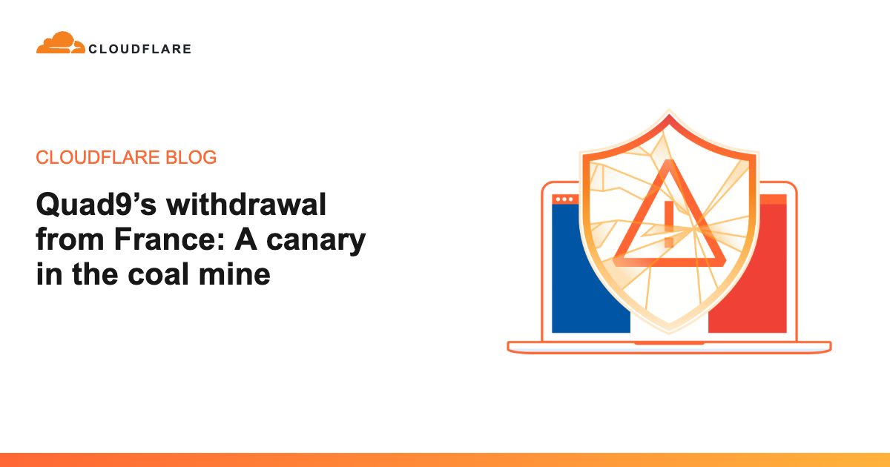
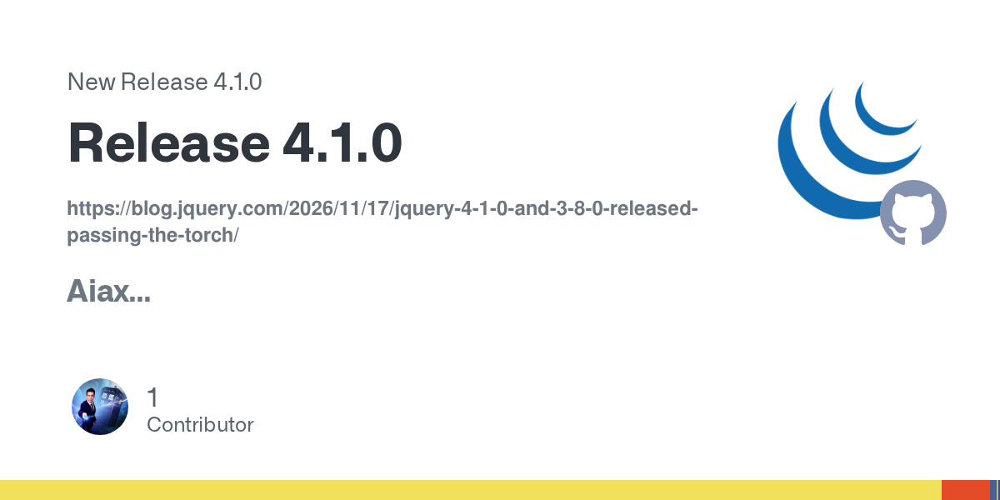
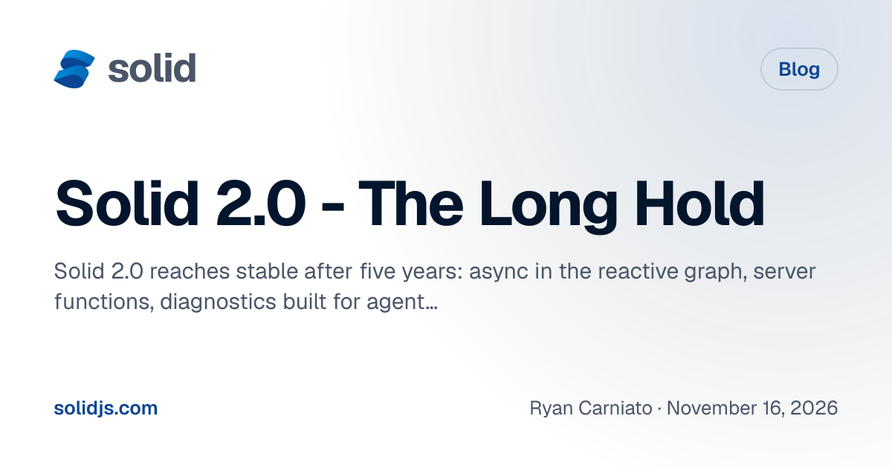

The front page, read closely and set in type — a briefing for Keegan
Compiled from news.ycombinator.comWednesday, November 18, 2026Every fact checked; every joke earned
AI DeskGPT-6.2 holds the leadOpenAI’s release stands at 1,302 points, up 396 since yesterday afternoon’s edition — the day’s biggest riser.
SecurityJava4Shell, CVSS 9.2A flaw in OpenJDK’s Base64 decoder yields pre-auth remote code execution in Keycloak, Jira and Jenkins, in default configs.
InfrastructureQuad9 quits FranceA court’s daily penalties push the Swiss resolver out; hospitals and utilities using it will see lookups simply fail.
National SecurityNSANet offlineThe NSA’s classified internal network is down; the agency says maintenance, the DNI says patching. Follow-Up inside.
Follow-Up · AI Desk
GPT-6.2 Astra and Sol hold the front page as testers weigh cost against Opus
OpenAI’s release retook the lead at 1,302 points and 813 comments; thread benchmarks put Astra near Opus 5.5 at a fraction of the cost
AI Desk★ 1302 pts · 813 comments · ▲ +396 since the last edition
SAN FRANCISCO — OpenAI’s GPT-6.2 Astra and Sol, released this week ahead of Anthropic’s initial public offering, held the front page’s top slot at this morning’s snapshot with 1,302 points and 813 comments, up 396 points since the Herald’s Tuesday-afternoon edition.[11] OpenAI’s announcement page sat behind a bot wall for this newsroom, so this report is drawn from the thread, where early testers posted numbers within hours of the release.
Third-party results land Astra and Sol just behind Anthropic’s Opus 5.5. On FrontierCode 2.0, Sol 6.2 scores 43.8% against Opus’s 45.5%, up from 39.0% for Sol 6.1; on Terminal-Bench-Science it posts 68.0% to Opus’s 63.3%; on the Artificial Analysis Intelligence Index it reaches 57.3 to Opus’s 59.1.[11] Costs are moving faster than scores: on Plotly’s data-analytics exam, Astra finished for about $4 where GPT-6.0 cost about $20, and Sol for $1.2 against $2.6, with similar accuracy and fewer tool calls.[11]
The thread’s sharpest dissent concerns the model it replaces. “Sol 6.1 is statistically equal with DeepSeek 4.1 Flash at 10x the cost and 25% slower,” one tester wrote of his company’s internal battles; an early-access user reported that 6.2 “is still overengineering, especially Sol.”[11] Several readers read the release date itself as a move: landing a frontier model days before a rival’s IPO, one put it, is a “Nintendo vs. Sega” moment — two players too similar for both to keep spending at this rate.
Continued in the thread · news.ycombinator.com
Security
Java4Shell: pre-auth RCE in OpenJDK’s Base64 decoder, rated 9.2 critical
Security Desk★ 1040 pts · 276 cmts
Disclosure poster for CVE-2026-114938, “Write once, RCE everywhere.” calif.io
Researchers at Calif disclosed Java4Shell (CVE-2026-114938), a memory-corruption flaw in OpenJDK’s Base64 decoder scored 9.2 out of 10 (critical) under CVSS 4.0, with pre-authentication remote code execution demonstrated in the default configurations of Keycloak, Atlassian Jira and Confluence, Jenkins, JFrog Artifactory and PingFederate.[2]
The bug sits in hand-written AVX-512 assembly that OpenJDK uses to decode Base64 in bulk: 64 “A” characters and one “=” make the routine compute a negative output length and write 62 bytes past a 50-byte buffer, exposing memory in the manner of Heartbleed.[2] A client-side variant compromises a Java program that merely opens a TLS connection to a hostile server.[2] With the fixed runtime only just pushed, one reader flagged a stopgap: running the JVM with -XX:UseAVX=2 sidesteps the vectorized decode path entirely.[12]
Infrastructure
Quad9 withdraws its DNS resolver from France under daily penalties
Infrastructure Desk★ 764 pts · 334 cmts

Cloudflare’s post calls the withdrawal “a canary in the coal mine.” blog.cloudflare.com
Quad9, the Swiss non-profit that runs a free public DNS resolver, will withdraw from France after a court ruling imposed daily financial penalties for not blocking domains tied to alleged copyright infringement — and French government bodies, schools, hospitals and utilities that use it have no way to be told their lookups are about to fail.[3]
Cisco’s OpenDNS withdrew from France, Portugal and Belgium under similar orders, and a Belgian court has given Cloudflare, Google and Cisco until early January 2027 to begin blocking through their public resolvers or face substantial penalties — something Cloudflare says it has never done.[3] The thread reached for the structural point: “If you want to preserve the Internet as you see it,” one reader argued, “you need to provide a solution for copyright.”[13]
The Day’s Other Leads
Follow-Up · National Security
NSANet, the NSA’s classified internal network, is down
NSA headquarters at Fort Meade, Maryland. media.cnn.com
FORT MEADE, MD. — NSANet, the highly classified network the National Security Agency uses for internal communications, went down Tuesday, CNN reported, citing six people familiar with the matter; the agency closed its Fort Meade campus to all but essential personnel under a “code yellow” staffing level, hours after telling employees they could return as normal.[4]
Officials said there is no evidence of a cyberattack. The NSA called it “temporary degradation during scheduled routine maintenance”; Director of National Intelligence Jay Clayton said patching for the PHP vulnerabilities disclosed last month left some systems not coming back up “as expected.”[4] A former senior NSA official called a full NSANet outage “alarming, but likely not crippling”: the agency is a network of networks, with backups that also reach the president, who is traveling in Asia this week.[4]
Media
Randomized experiment: AI Overviews cut search clicks by 40%
Media Desk★ 549 pts · 408 cmts
When researchers gave US desktop Chrome users an extension that hid Google’s AI Overviews from some and not others, the group that still saw them averaged 0.37 clicks to outside websites per search, against 0.62 for the hidden group — a cut of about 40% on any search where an Overview appears.[5]
Overviews now show on 61.4% of the US keywords DataForSEO tracks, up from 5.9% in September 2024, while featured snippets fell from 8.96% to 0.44% of results; health and finance queries draw them most often, at 69.7% and 68.8%.[5] The author, who submitted the piece himself, argued in the thread that Google disrupting its own search page beats being disrupted by rival chatbots — and that the transition has so far left ad revenue intact.[15]
Culture
“AI is killing All About Berlin”: a solo guide loses three-quarters of its traffic
Culture Desk★ 543 pts · 516 cmts
All About Berlin, the English-language guide Nicolas Bouliane has run since 2017 and lived on since 2020, has lost roughly three-quarters of its traffic after seven years of growth. Where Google once returned a link, he writes, it now returns “a page of ads, then an AI-generated answer trained on my content, then finally a link to my website.”[6]
The site is not a hobby: Berlin’s immigration office uses his data about itself, and the project inspired two government portals.[6] The thread’s harder question is where new source material comes from — “AI is only getting (inaccurate shadows of) the info from these sources which it is simultaneously working to kill,” one reader wrote, of Stack Overflow and sites like this one.[16]
Security & Practical
Privacy
IRS sign-ins via ID.me run under ID.me’s terms, arbitrator included
Privacy Desk★ 404 pts · 203 cmts
Taxpayers who sign into IRS online services with ID.me accept the vendor’s own terms of service, which send disputes to a neutral arbitrator rather than a judge or jury unless the user opts out within 30 days; its privacy policy reserves the right to use information “for marketing purposes” and to transfer it in a sale or merger, Consumer Rights Wiki documents.[7]
The government-run Login.gov works for the same sign-ins, and the IRS’s Direct Pay takes bank-account payments with no sign-in at all; Senators Wyden and Warren asked Treasury on October 29 why it keeps using ID.me, a day after TreasuryDirect switched to it as its only login.[7] ID.me’s current terms (version 10.1.0, dated November 13) count continued use as acceptance of changes.[7] The thread’s practical note: the Login.gov door at irs.gov is open now.[17]
No image obtained · sourced from the wiki and thread
Science
350 years ago, Ole Rømer showed light travels at a finite speed
Science Desk★ 362 pts · 119 cmts
Ole Rømer, who timed Io’s eclipses to put a speed limit on light. sciencenorway.no
PARIS, 1676 — In September of that year the Danish astronomer Ole Rømer told the Académie des Sciences that on November 9, Jupiter’s moon Io would emerge from the planet’s shadow ten minutes later than the tables predicted. It did, and instantaneous light died on the spot.[8]
Rømer used Io as a clock: its eclipses ran late while Earth receded from Jupiter and early as it approached, which he explained by light’s travel time — about 22 minutes to cross Earth’s orbit, an estimate roughly 25% low (about 225,000 km/s against the true 300,000, the modern value cited by NTNU’s Jacob Wüsthoff Linder).[8] Published that December 7 in the Journal des sçavans, the result wasn’t fully accepted until Bradley’s stellar aberration, 50 years on — though, as one reader noted, Empedocles and Ibn al-Haytham had guessed finitude first.[18]
Language
jQuery 4.1.0 ships, with 3.8.0 “passing the torch”
Language Desk★ 347 pts · 179 cmts

Release 4.1.0, signed by Timmy Willison. github.com
jQuery 4.1.0 shipped Tuesday evening, signed by maintainer Timmy Willison, alongside a 3.8.0 the release blog bills as “passing the torch.” The changes are cleanup with teeth: a workaround for a Safari 27 regex-interpreter bug, a ReDoS fix in identifier matching, querySelectorAll replacing the old getElementsBy* lookups, and support for form-associated custom elements.[9]
The release also adds guidelines for machine-generated contributions.[9] The thread was an obituary that declined to stay buried — “I’m actually surprised (in a good way) that it’s still maintained,” one reader wrote, “and it still helps half of the internet to function.”[19]
Tools
Solid 2.0 goes stable, built to be written by agents
Tools Desk★ 337 pts · 107 cmts

Solid 2.0, five years after 1.0. solidjs.com
Solid 2.0 reached stable, five years after 1.0, with an “async graph” in which any computation can return a promise or async iterator and everything downstream simply copes, and with diagnostics built for machines: development builds report a reactive mistake with a stable code, its source location, and a repair guide aimed at coding agents.[10]
The claim’s premise is that fine-grained reactivity suits agents precisely because it constrains them. Readers split on the premise: “if a framework is made so that coding agents can use it well, why is it a negative?” asked one, while another answered that agents should mean less framework, not better-behaved ones.[20]
“Every framework now says it ‘works great with AI’, and usually that means models have seen a lot of it. That’s a statement about training data, not about the framework.”
Solid 2.0 announcement · solidjs.com · [10]
Classifieds — Rates: 1 Karma per line
NOTICE: French government bodies, hospitals and utilities still pointing at Quad9 — your resolver stops working, with no notice and no explanation. Plan accordingly.[3]
WANTED: another way to pay the rent. Eight years of Berlin guides, three-quarters of the audience gone. Owner teaches computers his words for free.[6]
FOR DISPUTE: your IRS sign-in. One arbitrator, no jury; opt out within 30 days of accepting. Login.gov accepted at the same door.[7]
The Box Score
The day in one line: GPT-6.2 leads at 1,302 points; a 64-character Base64 string earns Java a 9.2; Quad9 leaves France; the NSA learns patching is also an outage.
Front Page Ledger
Stories typeset
10
Fresh stories
8
Follow-ups
2
Carried in digest
0
Combined points
6,279
Combined comments
3,664
Most-discussed
GPT-6.2 (813)
Biggest riser
GPT-6.2 ▲+396
Corrections & Clarifications
The 40%, precisely. The front page’s headline — AI answers “reducing search traffic by 40%” — compresses the finding. The experiment measured clicks on searches where an Overview appears (0.37 vs 0.62 per search); a given site’s total loss depends on how often its keywords now draw Overviews — 61.4% of tracked US keywords, per the source.[5]
“Last week” vs. May. The Berlin essay says Google announced “last week” that AI answers will replace search results entirely, with ads in them; readers date both the announcements it cites, and the post itself, to May 2026. The traffic figure is the author’s own analytics, self-reported.[16]
“Write once, RCE everywhere.” The slogan narrows on inspection: Keycloak, Jira, Confluence, Artifactory, Jenkins and PingFederate fall pre-auth, per the disclosure; Kafka, Solr, Elasticsearch, Gerrit and Spinnaker require authenticated access.[2]
Maintenance, or patching. The NSA’s statement attributes the NSANet outage to “temporary degradation during scheduled routine maintenance”; DNI Clayton attributed it to patching for last month’s PHP vulnerabilities. Both are official accounts; they are not the same explanation.[4]
Publisher’s Note
This morning’s paper is led by a follow-up — OpenAI’s GPT-6.2, up 396 points since Tuesday afternoon — with the NSANet outage returning as the second. Eight fresh stories fill the rest, headlined by a critical flaw in OpenJDK’s Base64 decoder. One degradation: OpenAI’s announcement page sat behind a bot wall, so that report is sourced from its thread.
— The Herald
OpenAI — “Introducing GPT-6.2 Astra and Sol,” openai.com/index/introducing-gpt-6-2-astra-sol/ (page behind a bot wall at press time)
Cloudflare blog — “Quad9’s withdrawal from France: A canary in the coal mine,” blog.cloudflare.com
CNN — “Highly classified US national security communications network goes down, sources say,” by N. Bertrand, K.B. Lillis, S. Lyngaas, D. Winkie, Z. Cohen, Nov 17, 2026
RevScope — “Google’s AI Overviews cut clicks to websites by 40%,” revscope.co, Nov 9, 2026
Nicolas Bouliane — “AI is killing All About Berlin,” nicolasbouliane.com
Consumer Rights Wiki — “ID.me terms required for IRS sign-in,” consumerrights.wiki
Science Norway — “350 years ago, this man discovered that light has a finite speed,” by Elise Kjørstad, Nov 16, 2026
Methodology: snapshot of the Hacker News front page taken at 14:00 UTC, November 18, 2026 (08:00 US Central), via the Algolia HN Search API (front_page tag, 30 candidates). Points and comment counts are as of the snapshot and will move. Stories were deduplicated against the four previous editions (~48 hours); a story returns as a Follow-Up only if it gained at least 40% and 150 points since coverage. The GPT-6.2 report is sourced from its thread, the announcement page being unavailable to this newsroom; the ID.me item runs without an image, none having been obtained. Every number in this paper comes from the linked sources above.